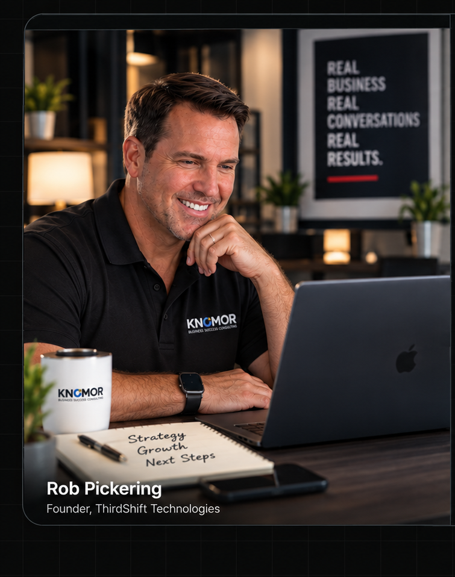

AI JUST TOOK ANOTHER CUSTOMER.
She needed what you sell. She was ready to buy. She asked AI who to call. It gave her somebody else's name.
I'm going to tell you things in this report that other people won't say to your face.
Not because I enjoy being the bad guy. Because you paid me seventeen dollars to tell you the truth, and the truth is worth a lot more than seventeen dollars right now.
Here's my promise to you: every number in this report comes from a named, real source — McKinsey, Gartner, Intuit, the U.S. Chamber of Commerce, Fortune, CNBC. Not from some marketing blog trying to sell you software. When a number couldn't be verified, I threw it out. There's a whole chapter later where I'll tell you which parts of the AI hype are overblown, because The No Garbage Real AI Truth Report has to be willing to call out the garbage in its own industry.
But I'm also going to tell you, plainly, why I believe the next 24 months will decide which home-service businesses in your market grow — and which ones quietly disappear. And I'm going to show you the receipts.
One more thing before we start. Five days before I finished this report, something happened in the AI world that most business owners haven't even registered yet. It changes the timeline on everything you're about to read. I'll tell you exactly what it is — and what it means for your business specifically — when we talk. Hold that thought. We'll come back to it at the end.
And if you're the guy who just thought "I don't need any of this, I get all my business from word of mouth" — stay with me for one more paragraph, because you're exactly who this report is for.
Here's what I've noticed talking to owners like you: "word of mouth" isn't usually a strategy you chose. It's usually what's left after paid ads didn't pan out, SEO felt like a black hole, and the website you paid for turned into a digital business card nobody visits. Word of mouth became "your thing" by default, not by design. And it worked — for a while — because your customer's neighbor picked up the phone and said your name.
That neighbor is now a chatbot. Same question, same trust, different mouth answering it. Section 5 is where I prove this to you, cold, no opinions — just wait for it.
Let's go.
She asked one question. AI made the shortlist.
This is the new moment of truth: the customer can ask for one recommendation instead of browsing ten businesses.
Clear services · trusted signals · locally relevant · easy to understand
This has happened before. You just didn't see it coming last time either.
Every ten to fifteen years, the entire technology world rips itself up and starts over.
Mainframes gave way to personal computers. Personal computers gave way to the internet. The internet gave way to the cloud — that just means software and files living on big remote computers instead of the machine on your desk. The cloud gave way to the smartphone in your pocket.
Each time, the same thing happened to small businesses: the ones who moved early looked a little crazy for about two years. Then they looked like geniuses for the next ten.
The ones who waited said the same thing every single time: "My customers don't use that." The plumber in 1999 who said his customers don't use the internet. The roofer in 2011 who said nobody finds a roofer on their phone. They weren't stupid. They were just looking at their current customers instead of their next ones.
Now here's what makes this moment different — and I'm not the one saying it.
Jensen Huang runs NVIDIA, the company that makes the computer chips nearly all of this AI runs on. It's one of the most valuable companies on the planet. At the big CES technology show in January 2026, he laid out that same platform-shift history I just gave you — and then said something that should make you sit up: this time, two of those once-in-a-decade shifts are happening at the same time. The way computing works is changing, and what computers can do is changing, simultaneously.
He put a number on it: roughly ten trillion dollars of the computing built up over the last decade is being rebuilt onto this new AI foundation, with hundreds of billions of dollars a year in new investment pouring in behind it.
Every major shift changes who gets found.
The technology changes. The small-business mistake stays remarkably consistent: waiting until customers have already moved.
TWO SHIFTS AT ONCE
A couple weeks later, at the World Economic Forum in Davos — the annual gathering where the people who run the global economy compare notes — Huang described the AI buildout as the largest infrastructure project in history. Energy, chips, data centers, the AI models themselves, and the applications built on top. Five layers, all being constructed at once, right now. And he specifically said he worries about ordinary people — the average saver, the average pensioner — getting left on the sidelines while it happens.
Read that again. The man selling the shovels in this gold rush is publicly worried that regular people will get left out.
You don't have to understand chips or data centers. You just have to understand the pattern: when the platform shifts, the businesses on the old platform don't get a vote. The shift happens to them.
The question this report answers is simple: where exactly are we in this shift, what does it mean for a home-service business specifically, and what should you actually do about it in the next 90 days — without the hype.
You think AI adoption is "coming." It already came. You're standing in the after.
Let me hit you with the number that reframes everything else in this report.
Intuit — the company behind QuickBooks, the accounting software half of small business America runs on — published its 2026 AI Impact Report. They didn't survey a hundred people at a conference. They surveyed 34,364 small and mid-size business owners, worked with economists from the University of Chicago, and analyzed anonymized data from over five million businesses.
Here's what they found:
This is not “early someday.”
The report's own Intuit data shows the movement from roughly half of small businesses to more than three out of four using AI regularly.
Not "have tried it once." Regularly. And in July 2024 — barely two years ago — that number was 48%.
Sit with that. In roughly eighteen months, regular AI use among small businesses went from about half to more than three out of four. If you're not using it in a meaningful way, you are now in the minority. The bottom quarter. That's not an insult — it's arithmetic.
And it's not busywork adoption either. Same report: 78% of those businesses say AI improved their productivity (up from 46%). 43% say it directly increased their revenue — and only 2% say it hurt. For every business that says AI made them cut staff, four say it helped them hire more.
Now stack the other sources on top, because one survey is a data point and five surveys is a fact:
of individual users report AI improved their personal productivity, across 1,719 orgs in 97 countries.
of workers now have access to company-approved AI tools, up from under 40% a year earlier.
of all workers at small businesses already use AI at work — mostly to do more, not replace themselves.
jump in agentic AI adoption among customer service orgs in a single year.
And in customer service — the part of your business where AI touches your actual customers — Salesforce, the giant that makes the software big companies use to manage customers, found AI leapt from the number ten priority to the number two priority for service leaders in a single year. An "AI agent," in plain English, is AI that doesn't just answer a question — it actually does the task: answers the call, books the appointment, sends the follow-up. We'll come back to that word "agent" a lot, so lock in that definition now.
Here's what I want you to take from this section, and it's not fear. It's orientation. The debate about whether small businesses will adopt AI is over. It ended sometime in 2025 and nobody sent out a memo. The only live question left is which businesses use it well — and Section 7 will show you that "using it well" is rarer than the hype suggests, which is exactly where your opening is.
Everyone else already moved. Read those numbers again — 77% of small businesses, half of all Main Street workers, two-thirds of service organizations. You're not "waiting to see if this AI thing is real." That question got answered while you were busy running jobs. If you're not using AI in your business right now, you are the outlier — not the norm, not the sensible majority, the outlier. And the market has never, once, in the entire history of business, rewarded the last guy to figure out what everyone else already knew.
The old funnel had a list. The new funnel can have one answer.
The way people find a contractor just changed underneath you — and nobody rang a bell.
For twenty years, the game was Google. Get found on Google, get the call. You know this game. You've probably paid people to play it for you.
The game changed. Not "is changing." Changed.
Here's the stat I'd put on a billboard if I could only pick one from this whole report. BrightLocal runs the industry-standard annual survey of how consumers find and choose local businesses.
Six to forty-five. In one year. That is not a trend line. That's a cliff — going up.
What does that look like in real life? It looks like a homeowner with a leaking water heater who doesn't type "plumber near me" into Google anymore. She opens ChatGPT — or the AI now built directly into her phone and her search bar — and says: "My water heater is leaking, who should I call?" And the AI answers her. With names. Maybe three of them. Maybe one.
If your business isn't in that answer, you don't come in second place. You don't exist. There's no page two of an AI answer.
An industry study from Scorpion in 2026 found that about 22% of homeowners now go to an AI tool first — before Google — when they need a contractor. Treat that as a directional number, not gospel — but even directionally, one in five of your prospects starting somewhere you've never optimized for should stop you cold.
And it's about to get more extreme, because the next phase isn't people asking AI for recommendations. It's AI doing the buying. Boston Consulting Group — BCG, one of the big three global consulting firms — published research in late 2025 on what they call agentic commerce. Their findings, using Adobe's traffic data:
year-over-year growth in AI-referred traffic to U.S. retail sites. Not a typo.
of retailers are exploring or implementing AI agents; 63% fear falling behind within two years.
BCG's warning to businesses that ignore this — and I'm paraphrasing them — is that you risk becoming invisible plumbing behind an AI middleman: the AI owns the customer relationship, and you just fulfill whatever it sends you, at whatever price wins.
"That's retail, Rob, I fix furnaces." Sure. And the phone book was for pizza places until it wasn't. Consumer behavior doesn't stay in one industry. The same person buying sneakers through an AI assistant on Tuesday is asking it for an HVAC company on Saturday.
25% of contractors
are using AI in any meaningful way, per ServiceTitan's 2026 industry estimate. The window is still open.
45% of consumers
are already using AI to pick local businesses. Your customers moved faster than your competitors did.
That gap is the whole opportunity. Your customers changed faster than your competitors did. That's the single most exploitable fact in your market right now, and it will not stay true for long.
One more from BrightLocal while we're here: 97% of consumers rely on reviews, and 41% now say they always read them before contacting a business — up from 29% a year earlier. The AI tools are reading those same reviews to decide who to recommend. Your reviews aren't just social proof anymore. They're the raw material the machines use to decide whether you exist.
Your customer already left the building — and didn't tell you. She's not on page one of Google waiting for your SEO guy to earn his retainer. She's asking a machine who to trust, and the machine is answering with somebody's name. Right now, in your zip code, that's happening dozens of times a week. The only question is whose name comes out of the machine's mouth. If you don't know the answer, I promise you: it isn't yours.
Your next competitor may not look like the van across the street.
The report argues that newly available technical talent and AI tools can compress the distance between “small operator” and “sophisticated competitor.”
Traditional competitor
Same trade. Same trucks. Same referral channels. Familiar playbook.
AI-native operator
Automation, fast follow-up, content, data, better digital discovery, and fewer manual bottlenecks.
While you're watching the van across the street, a wave of laid-off talent is coming for your market.
Ask a contractor who his competition is and he'll name the other three companies in town with wrapped trucks. Fair. Also outdated.
Let me show you what's actually happening in the labor market, from sources that track this for a living.
Challenger, Gray & Christmas is the firm the entire business press relies on to track layoffs. Their data: 2025 layoff announcements topped 1.1 million — the highest total since the COVID pandemic. And 2026 didn't slow down: over 32,000 tech job cuts in just the first two months. Analysts have started calling this the era of "forever layoffs" — not one dramatic bloodbath that makes headlines, but a constant drip of smaller cuts, month after month, that never really stops.
Where do you think those people go?
FlexJobs — a major employment research firm — ran the numbers, reported by Fortune in April 2026: 62% of white-collar workers say they would leave the office for a trade job if it meant better stability and pay. And it's not just talk from the desk crowd: research from SupplyHouse, reported in the same Fortune piece, found roughly one in four Gen Z workers is seriously considering or actively pursuing a trade career instead of the white-collar path their parents pushed them toward.
Why? Because they watched what happened. Dario Amodei — the CEO of Anthropic, one of the top AI companies in the world, a guy with every incentive to downplay this — publicly predicted in 2025 that AI could wipe out up to half of all entry-level white-collar jobs within one to five years, with unemployment potentially hitting 20%. (Hold onto that prediction — in Section 7 I'm going to show you the other side of it, because cutting through the garbage means showing you both sides.)
Now let me be straight with you about what I can and can't prove, because that's the deal we made on page one. There is no official statistic that says "X thousand laid-off tech workers became pressure washers last year." That stat doesn't exist. What exists is this chain, every link sourced:
Connect those dots yourself. Here's my read, clearly labeled as my read: the next competitor who hurts you won't be the guy with the wrapped van you've been watching for ten years. It'll be a 34-year-old former project manager with a severance check, a spreadsheet, and zero bad habits. He doesn't know "how it's done in this business" — which means he also doesn't know what's impossible. He'll answer every call with AI because he never got used to missing them. He'll follow up five times automatically because his CRM — customer relationship management software, the system that tracks every lead — was set up on day one. He'll have 80 reviews in six months because asking is automated.
He's not better than you at the trade. Not even close. But he might be better than you at getting chosen — and Section 3 just showed you that getting chosen is now a machine's decision.
The guy who just got laid off from his corporate job is now your competitor — and he's got nothing to lose and everything to prove. He isn't weighed down by "we've always done it this way," because he hasn't done it any way yet. You have fifteen years of skill he can't fake. He has zero years of habits he has to unlearn. Skill wins jobs. But habits decide who gets the jobs — and his habits were born with AI already in them.
The trusted recommendation did not disappear. The mouth changed.
Yesterday
Your customer's neighbor answered: “Call Rob's company. They did a great job for me.”
Today
The customer asks an AI system: “Who should I hire?” The trust function is increasingly moving into the answer.
"All my business comes from word of mouth" isn't a strategy. It's a survivor story.
This section has no charts. No survey. Just an argument — mine — and I'll bet you can't poke a hole in it.
Every contractor I've ever talked to says some version of the same sentence: "Most of my business comes from word of mouth and referrals." And they say it with pride, like it's proof of quality. Sometimes it is.
But here's the question nobody asks: why is word of mouth still your main channel in 2026?
Here's my answer, and it stings: word of mouth isn't your main channel because it out-performed everything else. It's your main channel because it's what's left. Think about what actually happened in your market over the last ten years. Contractors tried Yellow Pages until those died. Tried HomeAdvisor and got burned on shared leads. Tried Facebook ads for three months, spent two grand, couldn't tell if it worked, quit. Tried a website guy, an SEO guy, maybe a "marketing agency" that charged $1,500 a month for reports nobody read. Each one of those quiet failures ended the same way: "Whatever — my real business comes from word of mouth anyway."
That's not a marketing strategy winning on merit. That's survivorship — the last channel standing gets the credit, not because it grew, but because it's the only one that never sent an invoice.
And word of mouth has a ceiling nobody talks about. It scales at the speed of dinner parties. Your happy customer tells maybe two people a year, when it happens to come up. Meanwhile — go back to Section 3 — the machine gets asked "who should I call?" dozens of times a week in your service area, and it answers instantly, every time, with total confidence.
Here's the twist that should actually give you hope: word of mouth isn't dying. It's being absorbed. Those reviews the AI tools read to decide who to recommend? That IS word of mouth — collected, stored, and read back to every prospect forever. The 41% of consumers who always read reviews before calling? They're checking your word of mouth without ever talking to a human who knows you.
So the businesses winning right now didn't abandon word of mouth. They industrialized it. Every job automatically becomes a review request. Every review becomes ammunition the machine uses to recommend them. Their word of mouth compounds. Yours evaporates into thin air at a backyard barbecue.
Word of mouth isn't working because it's good. It's working because everyone else who tried something else quit — and went quiet about it. It's the participation trophy of marketing channels: it shows up by default and nobody ever fires it. I'm not telling you to abandon referrals. I'm telling you that "word of mouth" whispered between neighbors was the 1996 version — and the 2026 version is reviews read aloud by a machine to every prospect in your market. Same asset. New owner. Go claim it.
A missed customer is not a website metric. It is revenue that never entered your pipeline.
Use the calculator in this section for your real numbers. This exhibit shows the logic of the loss.
The math on missed calls, and why 2027–2028 is closer than it looks.
Let's start with the money you're losing today, then I'll show you the clock that's running on the rest of it.
Part 1 — The call you missed this morning
I'm not going to do what every AI-receptionist company on the internet does and throw a scary made-up number at you — "contractors lose $87,000 a year to missed calls!" I went looking for the research behind numbers like that. There isn't any. The figures swing from $18,000 to $250,000 depending on which company's blog you read, and every one of them is trying to sell you a phone product. That's not research. That's a sales script wearing a lab coat. Cut.
Here's what I'll give you instead: logic you can't argue with, and then your own numbers.
A missed call is a missed customer. Not "maybe." When someone calls you, something is leaking, sparking, clogged, or broken — right now. She hangs up, looks at the next name — the name the machine gave her — and calls it. If that business answers, she's gone. Not gone-until-you-call-back. Gone forever.
You know your own numbers better than any study. So run them:
Missed calls per week, times the rate you close when you do answer, times your average ticket, times 52 weeks. That's not my statistic. That's your P&L.
Part 2 — The clock: 2026, 2027, 2028
Gartner is the research firm that big companies pay to predict technology. Here is Gartner's published timeline, with the jargon translated:
- 40% of enterprise apps will include task-specific AI agents, up from under 5% in 2025.
- The phase we're in now — one agent, one job. Answer the phone, chase the lead.
- A third of AI setups combine multiple specialized agents on complex tasks.
- 75% of hiring processes will test for AI proficiency.
- 15%+ of daily work decisions made autonomously by AI agents.
- AI agents intermediate ~90% of B2B purchasing — over $15 trillion in spend.
The money agrees with the timeline: global AI spending is projected to hit $2.52 trillion in 2026 — up 44% in a single year — and spending on agentic AI specifically to hit $201.9 billion, up 141% year over year.
One more Gartner number — and I'm giving it to you here on purpose, because it's the most honest thing in this whole section: Gartner also predicts that over 40% of agentic AI projects will be canceled by the end of 2027. Keep that in your pocket. Next section, I'm going to open it up, because it's not the gotcha it sounds like — it's actually your instruction manual.
And if your plan is "I'll ride it out and retire" — how far out is retirement? Because if the answer is four or five years, look at that timeline again. The full shift lands before your exit.
The window is now — not someday. Not "when it matures." Not "after my busy season." The simple tools that fit your business are mainstream this year, the shakeout is next year, and by 2028 the machine-run market is just the market. "I'll retire in four or five years" is not a plan anymore. You don't have to move fast. You have to move first in your zip code. Right now, while only a quarter of your competitors are doing anything meaningful, first is still available. It won't be in eighteen months.
Not every AI promise deserves your money.
The report deliberately separates practical, measurable uses from the “transform everything” pitch.
The chapter every AI salesman hopes you skip.
If this report were BS, this section wouldn't exist. Every claim so far says move. This section is where I show you the other side of the ledger — with the same quality of sources.
Start with the man at the center of the whole industry. Sam Altman runs OpenAI, the company behind ChatGPT. In July 2026, on CNBC, with predictions of AI wiping out half of all jobs hanging in the air, Altman said there has been "very little job loss that I can see so far."
The guy building the thing says the job apocalypse hasn't shown up yet. On live television.
Now put that next to Section 4: Dario Amodei predicting AI could erase half of entry-level white-collar jobs within five years. Amodei is describing what he believes is coming. Altman is describing what has actually happened so far. Both can be honest. That gap between prediction and observation is exactly where you should park your skepticism — for AI doom and AI hype alike.
Only 6% of orgs
are true "AI high performers" with real bottom-line impact. Most haven't turned it into serious money yet — McKinsey, 2026.
80% of individuals
report AI improves their personal productivity. One clear job, done well, wins — McKinsey, 2026.
And the big one — remember what I told you to keep in your pocket? Gartner predicts over 40% of agentic AI projects get canceled by end of 2027. The same firm forecasting the $15 trillion agent economy is telling you nearly half the attempts to build it will fail.
So is this the part where I tell you it's all overblown and you can relax? No. This is the part where I tell you what actually separates the winners — because the failure data is a map, and it points somewhere very specific.
Look at the pattern. Who fails? Companies that buy complicated AI with no clear job for it to do. Who wins? Companies where AI has a specific, measurable job. Individuals thrive. Enterprises flounder. AI is spectacular at doing one clear job and mediocre at "transforming everything."
Now — who does that math favor? The Fortune 500 company with 14 committees and a transformation office? Or you — a business where AI needs to do exactly three clear jobs: answer the phone, chase the lead, ask for the review?
The hype-graveyard is full of companies that bought AI like a lottery ticket. The winners bought it like a tool. You've been buying tools your whole life. You already know how to do this.
Here's what makes The No Garbage Real AI Truth Report different: I just showed you the failure rates, the flat profit numbers, and the guy who builds ChatGPT saying the job apocalypse hasn't materialized — on the record, all of it. It doesn't say AI is overrated. It says complicated AI is overrated. Simple AI with one job is quietly printing results — for the 6% who use it that way. So when I tell you the urgent parts of this report are real, believe me precisely because I just told you which parts aren't.
Do not throw away what already works. Add the rail built for where discovery is going.
Your existing web presence and your AI-ready presence can work together instead of forcing an either/or rebuild.
Here's what you actually do about it.
I'm not going to give you a fake 30-60-90 day countdown. Nobody controls how fast an AI engine decides to trust a website — anyone who promises you an exact number of days is selling you a number, not a result. What I can give you is the order things happen in, and why.
First, it has to be built correctly. Your current website — if you have one — was built for a world that doesn't run things anymore. It was built for backlinks, for keyword rankings, for the old worldwide web to crawl and index. That world isn't gone, but it's not the one deciding who gets the call anymore. AI engines don't read your website the way Google used to. They read something called AI schema — trust signals, domain authority, clarity, your name, address, and phone number matching everywhere, consistently. That's not a checklist item. That's the language these systems actually understand.
There's a second layer to it, called generative engine optimization (GEO). People used to search by keywords. Now they ask by phrases — full questions, like "who's the best plumber in Novi, Michigan." Those phrases are tracked by answer engine optimization (AEO). AI doesn't hand the customer five or six contractors to pick from the way a search results page did. It picks. It recommends. If your site isn't built in that language, you're not ranked low — you're not in the conversation at all.
Second, it takes time to be discovered. Once it's built right, the engines still have to crawl it, index it, and start trusting it. That clock isn't mine to promise you, and it isn't any other company's either.
Third, it has to stay active. These engines don't want to recommend a business that looks dead. Ongoing activity is what keeps you inside the recommendation instead of falling back out of it.
And if you already have a website — don't tear it down. Think of it like a train on two rails. One rail is your existing website: your Google presence, your prior SEO, your domain authority, everything already working. The other rail is your AI website — a second, separate track built specifically to be discovered and recommended by AI engines. You're not replacing one with the other. You're adding a second track. Anything additional is just more revenue, not a renovation.
Notice what's not on this list: robots, "agentic transformation," or anything requiring you to understand how any of this works under the hood. Schema. Discovery. Activity. Phone. Follow-up. Reviews.
That's the whole assignment. While three-quarters of your competitors are still "keeping an eye on this AI stuff."
AI already changed the investigation. Your next move decides whether your business is evidence — or the recommendation.
The report has shown the pattern, the adoption, the behavior shift, the competitive pressure, the cost of waiting, the hype to ignore, and the practical path forward. The remaining evidence is your own business.
CONTRACTOR BUSINESS CONSULT
Listen in as a contractor's business is reviewed through the same lens you just saw in this report.
You now know more about where this is actually heading than 90% of the business owners in your market. Verified numbers, real timeline, no garbage.
So what do you actually do with this report? You've got two paths from here.
You can take everything you just read and go figure it out yourself — on your own timeline, at your own pace. AI is moving fast, faster than almost anything before it, and that's a completely legitimate option. At least now you're not walking around blind.
Or — you can reach out directly and let's inject your actual business into what AI can do for it, and put things in motion for real.
It's far less expensive to sit down one-on-one — normally $399, $149 right now — than it is to go shotgunning: buying AI agents, buying software subscriptions, hoping one of them happens to fix the problem. Get a real diagnostic instead. This is a real report, built on your business, your competition, your visibility, and the tools that can actually help you — not a generic pitch.
KnoMor is about giving you your time back. AI as a service doesn't just bring you more business — it gives you back the hours. Something that used to take four hours now gets done in ten minutes because of the technology. And once you have that time back, what you do with it is entirely your call.
And to be straight with you — this isn't about us doing the work for you. It's about helping you make the right decision, whether that decision is us or somebody else. There are a lot of companies out there right now claiming they can do this with zero real experience in the technology. Whoever you work with, make sure they've actually done it.
KnoMor is a one-on-one working session with me — Rob — where we run everything you just read against your actual business. Your numbers in the calculator, for real. Your three workflows, mapped. Your zip code, your trade, your next steps — on one page, in plain English, by the end of the call.
And remember page one? Five days before I finished this report, something happened in the AI world that most business owners still haven't registered. It's the first thing I'll put in front of you when we talk.
I haven't pulled a single punch in this report — not on the numbers, not on the timeline, not on what happens to the businesses that wait this out. I'm not going to start now. The market isn't slowing down for anybody to catch up on their own schedule. So let's not guess anymore. Let's get the facts on your business — real facts, not general market trends — and then figure out exactly which direction makes sense from there.

One-on-one. Your business. My full attention.
You paid seventeen dollars to find out what's real. For $149, find out what's real for you — before your market figures it out at full price.
— Rob Pickering
Founder, ThirdShift Technologies
- Intuit QuickBooks 2026 AI Impact Report (with University of Chicago economists; 34,364 SMB owners) — intuit.com/blog/global-stories/ai-impact-report
- McKinsey & Company, The State of AI: Global Survey 2026 (1,719 respondents, 97 countries) — mckinsey.com
- Deloitte, State of AI in the Enterprise 2026 (3,235 leaders, 24 countries) — deloitte.com
- U.S. Chamber of Commerce Foundation & Ipsos, Main Street AI Monitor, June 2026 — uschamberfoundation.org
- Salesforce, State of Service Report (7th ed.) and AI Agents Edition 2026 — salesforce.com/news
- Boston Consulting Group, "Agentic Commerce Is Redefining Retail," October 2025 — bcg.com
- BrightLocal, 2026 Local Consumer Review Survey — brightlocal.com
- Scorpion, 2026 national homeowner study (industry research)
- ServiceTitan, 2026 State of the Trades (industry estimate)
- Challenger, Gray & Christmas, layoff tracking data 2025–2026
- Fortune, April 20, 2026 (FlexJobs and SupplyHouse research)
- Jensen Huang, NVIDIA — CES 2026 keynote and World Economic Forum, Davos
- Sam Altman, OpenAI — CNBC "Squawk on the Street," July 9, 2026
- Dario Amodei, Anthropic — public statements, 2025
- Gartner — enterprise AI agent forecasts and spending projections, 2025–2026 — gartner.com